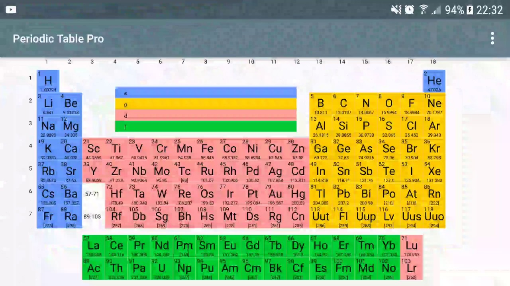
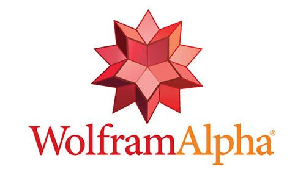
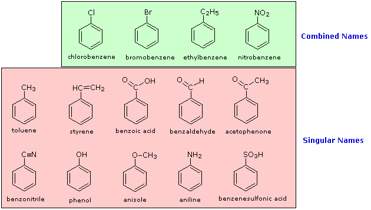
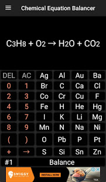

~Física & Química~
El trabajo y el esfuerzo es el secreto para pasar cualquier tipo de examen. Pero hay muchas personas que aun dedicándole mucho tiempo no consiguen superar algunas asignaturas, es momento de preguntarse ¿estoy estudiando bien?
Sin embargo para aprobar física y química existen una serie de consejos que solo se pueden aplicar a estas asignaturas.
Podemos distinguir cuatro fases en el estudio y una serie de consejos para aplicar siempre:
- Estudiar, comprender y asilimar los conceptos
- Interiorizar, memorizar y practicar los conceptos
- Planificar el examen en concreto
- Trucos para afrontar los exámenes
- Otro tipo de consejos útiles
Te dejare algunas páginas y apps que te facilitarán estas materia
Periodic Table Droid

Si necesitas una tabla periódica Periodic Table Droid es una completa aplicación en la que además de la tabla periódica encontrarás descripciones de los elementos, categoría, estado, estructura cristalina -con imágenes-, símbolo, número atómico, punto de fusión, electronegatividad, configuración de electrones, isótopos, y mucho más.
WolphramAlpha

Si te gustan las matemáticas, la física, la química o cualquier otra ciencia esta es la mejor aplicación que puedes tener. WolphramAlpha te pone casi todo el conocimiento científico a tu alcance: cálculo, aritmética, lógica, estadística, astrofísica, materiales, socioeconomía, medicina, geografía, historia, música, cultura, etc. Todo lo que quieras saber en una sola aplicación que además resuelve problemas matemáticos y ofrece gráficos.
Además, si lo que quieres es aprender, WolphramAlpha dispone de varias aplicaciones con cursos de diversas materias de matemáticas, física y química que te ayudarán a dominar todas las materias.
Ptable
Aquí encontraras todas las caracteristícas y propiedades con respecto a los elementos a la tabla periodica.
Termodynamics Calc
Termodynamics Calc. contiene 44 calculadoras para conseguir resultados rápidos sobre diferentes parámetros comunes de la termodinámica como son la entropía, la energía eficiente, el número de Fourier, el ciclo de Carnot, la constante de radiación o la energía cinética entre muchos otros.
Organic Chemistry Nomenclature

Organic Chemistry Nomenclature quiere ayudarte a aprender química orgánica de una forma sencilla y rápida a través de una aplicacion móvil. Los temas para aprender la formulación están divididos por el tipo de moléculas para que así sea más sencillo aprender poco a poco.
Chemical Equation Balancer

Si necesitas saber el resultado de tus ecuaciones químicas, Chemical Equation Balancer te ofrece el resultado balanceado. Así siempre sabrás cual será el resultado de la suma de dos componentes químicos. Se trata de una ayuda muy sencilla per completa para los amantes de la química.
Science Quiz
Si te gusta jugar al trivial pero quieres poner a prueba tus conocimientos científicos juega con Science Quiz y podrás comprobar tus conocimientos en física, química, zoología y botánica. Se trata de una aplicación que es a la vez educativa y divertida.
.png)